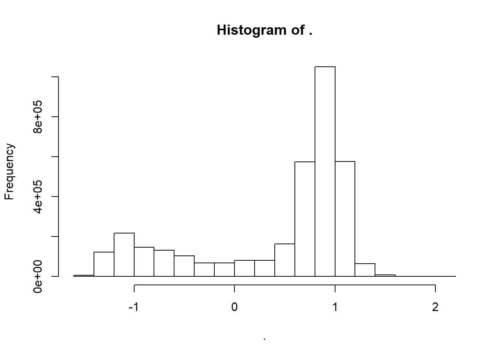
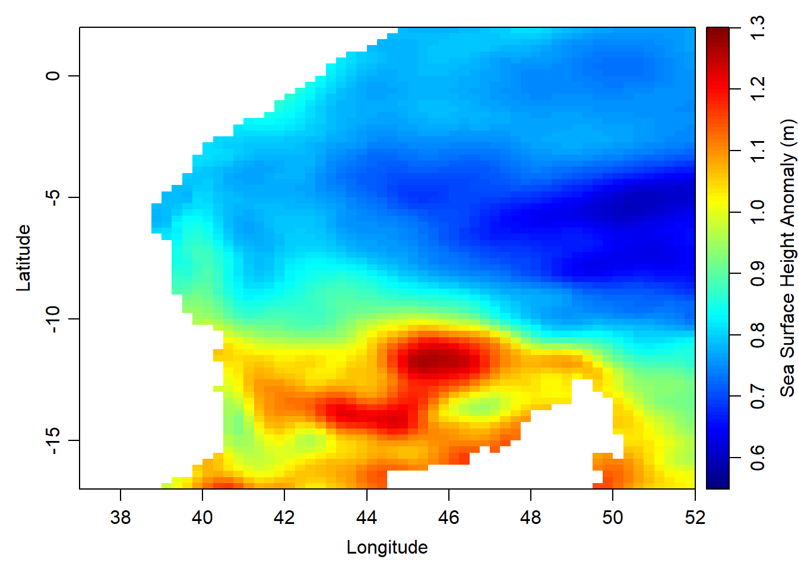
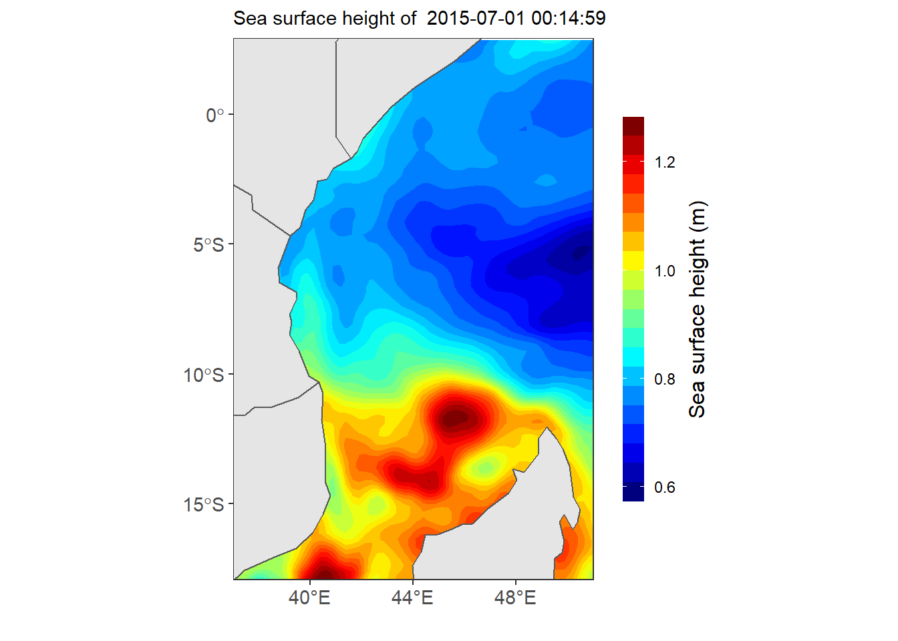

Chapter 19 Reading NetCDF
conflicted::conflict_prefer("print", "raster")19.1 Introduction
Network Common Data Form (NetCDF) is a widely used format for storing array–based data as variables. NetCDF are developed and maintained by Unidata was originally developed for storing and distributiing climate data , such as those generatd by climate simulation or reanalysis models. It has also been adopted in other fields, particularly in oceanography, where large mutidimensional arrays of data are generatted from satellite observation systems. The NetCDF format is a platform-independent because can be transeerred among servers and coputers that are running different operating systems, without a need to convert the file that fit a particular sytem. The NetCDF is also self-describing—contains metadata that describe the what is contained in the file, like the dimensions of longitude and latitude of the grid, the names and units of variables in the dataset, and attributes that describe thingks like themissing values codesr, or offsets and scale facators that may have been used to compress the data.
19.2 Types of netCDF file
There are two version of netCDF. The first is netCDF version 3 (netCDF3), which is widely used, but has some size and performance limitations. The other is netCDF version 4 (netCDF4), which supports larger dataset and includes addtional capabilities like to compress the file and reduce the file size.
19.3 Rading NetCDF with ncdf4 package
The ncdf4 package allows reading, writing, and creation of netCDF files, either netCDF version 3 or (optionally) netCDF version 4. Let’s first load the packages we need. Note that the ncddf4 package must already be installed on your machine.
require(ncdf4)
require(magrittr)
require(tidyverse)Once you have loaded the package, then use a function nc_open() to read an existing netCDF file
# nc.file = nc_open("./data/ml_depth__0.2deg_mean_grid_all_global_locean.nc")
nc.file = nc_open("e:/MatlabWorking/Altimetry/old staff/wio_ssh_july_2015.nc")Once we have opened the file, we can print it to have a glimpse of some basic information about the file
nc.fileFile e:/MatlabWorking/Altimetry/old staff/wio_ssh_july_2015.nc (NC_FORMAT_CLASSIC):
2 variables (excluding dimension variables):
int crs[]
comment: This is a container variable that describes the grid_mapping used by the data in this file. This variable does not contain any data; only information about the geographic coordinate system.
grid_mapping_name: latitude_longitude
inverse_flattening: 298.257
semi_major_axis: 6378136.3
_CoordinateTransformType: Projection
_CoordinateAxisTypes: GeoX GeoY
int adt[lon,lat,time]
_CoordinateAxes: lon lat time lat lon
_FillValue: -2147483647
coordinates: lon lat
grid_mapping: crs
long_name: Absolute Dynamic Topography
scale_factor: 1e-04
standard_name: sea_surface_height_above_geoid
units: m
3 dimensions:
time Size:31
axis: T
long_name: Time
standard_name: time
units: days since 1950-01-01 00:00:00
_CoordinateAxisType: Time
lat Size:420
axis: Y
bounds: lat_bnds
long_name: Latitude
standard_name: latitude
units: degrees_north
_CoordinateAxisType: Lat
lon Size:401
axis: X
bounds: lon_bnds
long_name: Longitude
standard_name: longitude
units: degrees_east
_CoordinateAxisType: Lon
13 global attributes:
title: NRT merged all satellites Global Ocean Gridded Absolute Dynamic Topography L4 product
institution: CNES, CLS
references: http://www.aviso.altimetry.fr
source: Altimetry measurements
Conventions: CF-1.0
history: Data extracted from dataset http://opendap.aviso.altimetry.fr/thredds/dodsC/dataset-duacs-nrt-over30d-global-allsat-madt-h
time_min: 23922
time_max: 23952
julian_day_unit: days since 1950-01-01 00:00:00
latitude_min: -74.875
latitude_max: 29.875
longitude_min: 19.875
longitude_max: 119.875By simply printing this nc.file file which is the returned object of nc_open() gave us a lot of information that is ovewhelming to grasp. This information describe about the file and is very important to understand the basic information embedded in it as we will require them later for extraction of the varibles. In summary, the metadata tells us about the;
filename, which is a character string holding the name of the file; for our case isFile ./data/ml_depth__0.2deg_mean_grid_all_global_locean.ncndims, which is an integer holding the number of dimensions in the file; in our file there are three dimension oftime',latandlon`nvars, which is an integer holding the number of the variables in the file that are NOT coordinate variables (aka dimensional variables); the printed file showed there are seven variableskrig_std_dev, mask, med_dev, mld, mld_raw, mld_smth, n_profilesnatts, which is an integer holding the number of global attributes;unlimdimid, which is an integer holding the dimension id of the unlimited dimension, or -1 if there is none; 6 dim, which is a list of objects of class ncdim4;var, which is a list of objects of class ncvar4;writable, which is TRUE or FALSE, depending on whether the file was opened with write=TRUE or write=FALSE.
19.3.1 Extracting the dimensions
Based on the metadata, I can customize it to print only the information I need. I used the for loop to customize only the variable information I need shown. Here is the code that will print the dimensions in the files together with additional information
for (j in 1:nc.file$ndims){
a = nc.file$dim[[j]]
print(paste(" Here is information on variable number",j))
print(paste(" Name: ",a$name))
print(paste(" Units:",a$units))
print(paste(" Length:",a$len))
print(paste(" Values:"))
print(a$vals)
}[1] " Here is information on variable number 1"
[1] " Name: time"
[1] " Units: days since 1950-01-01 00:00:00"
[1] " Length: 31"
[1] " Values:"
[1] 23922 23923 23924 23925 23926 23927 23928 23929 23930 23931
[11] 23932 23933 23934 23935 23936 23937 23938 23939 23940 23941
[21] 23942 23943 23944 23945 23946 23947 23948 23949 23950 23951
[31] 23952
[1] " Here is information on variable number 2"
[1] " Name: lat"
[1] " Units: degrees_north"
[1] " Length: 420"
[1] " Values:"
[1] -74.875 -74.625 -74.375 -74.125 -73.875 -73.625 -73.375
[8] -73.125 -72.875 -72.625 -72.375 -72.125 -71.875 -71.625
[15] -71.375 -71.125 -70.875 -70.625 -70.375 -70.125 -69.875
[22] -69.625 -69.375 -69.125 -68.875 -68.625 -68.375 -68.125
[29] -67.875 -67.625 -67.375 -67.125 -66.875 -66.625 -66.375
[36] -66.125 -65.875 -65.625 -65.375 -65.125 -64.875 -64.625
[43] -64.375 -64.125 -63.875 -63.625 -63.375 -63.125 -62.875
[50] -62.625 -62.375 -62.125 -61.875 -61.625 -61.375 -61.125
[57] -60.875 -60.625 -60.375 -60.125 -59.875 -59.625 -59.375
[64] -59.125 -58.875 -58.625 -58.375 -58.125 -57.875 -57.625
[71] -57.375 -57.125 -56.875 -56.625 -56.375 -56.125 -55.875
[78] -55.625 -55.375 -55.125 -54.875 -54.625 -54.375 -54.125
[85] -53.875 -53.625 -53.375 -53.125 -52.875 -52.625 -52.375
[92] -52.125 -51.875 -51.625 -51.375 -51.125 -50.875 -50.625
[99] -50.375 -50.125 -49.875 -49.625 -49.375 -49.125 -48.875
[106] -48.625 -48.375 -48.125 -47.875 -47.625 -47.375 -47.125
[113] -46.875 -46.625 -46.375 -46.125 -45.875 -45.625 -45.375
[120] -45.125 -44.875 -44.625 -44.375 -44.125 -43.875 -43.625
[127] -43.375 -43.125 -42.875 -42.625 -42.375 -42.125 -41.875
[134] -41.625 -41.375 -41.125 -40.875 -40.625 -40.375 -40.125
[141] -39.875 -39.625 -39.375 -39.125 -38.875 -38.625 -38.375
[148] -38.125 -37.875 -37.625 -37.375 -37.125 -36.875 -36.625
[155] -36.375 -36.125 -35.875 -35.625 -35.375 -35.125 -34.875
[162] -34.625 -34.375 -34.125 -33.875 -33.625 -33.375 -33.125
[169] -32.875 -32.625 -32.375 -32.125 -31.875 -31.625 -31.375
[176] -31.125 -30.875 -30.625 -30.375 -30.125 -29.875 -29.625
[183] -29.375 -29.125 -28.875 -28.625 -28.375 -28.125 -27.875
[190] -27.625 -27.375 -27.125 -26.875 -26.625 -26.375 -26.125
[197] -25.875 -25.625 -25.375 -25.125 -24.875 -24.625 -24.375
[204] -24.125 -23.875 -23.625 -23.375 -23.125 -22.875 -22.625
[211] -22.375 -22.125 -21.875 -21.625 -21.375 -21.125 -20.875
[218] -20.625 -20.375 -20.125 -19.875 -19.625 -19.375 -19.125
[225] -18.875 -18.625 -18.375 -18.125 -17.875 -17.625 -17.375
[232] -17.125 -16.875 -16.625 -16.375 -16.125 -15.875 -15.625
[239] -15.375 -15.125 -14.875 -14.625 -14.375 -14.125 -13.875
[246] -13.625 -13.375 -13.125 -12.875 -12.625 -12.375 -12.125
[253] -11.875 -11.625 -11.375 -11.125 -10.875 -10.625 -10.375
[260] -10.125 -9.875 -9.625 -9.375 -9.125 -8.875 -8.625
[267] -8.375 -8.125 -7.875 -7.625 -7.375 -7.125 -6.875
[274] -6.625 -6.375 -6.125 -5.875 -5.625 -5.375 -5.125
[281] -4.875 -4.625 -4.375 -4.125 -3.875 -3.625 -3.375
[288] -3.125 -2.875 -2.625 -2.375 -2.125 -1.875 -1.625
[295] -1.375 -1.125 -0.875 -0.625 -0.375 -0.125 0.125
[302] 0.375 0.625 0.875 1.125 1.375 1.625 1.875
[309] 2.125 2.375 2.625 2.875 3.125 3.375 3.625
[316] 3.875 4.125 4.375 4.625 4.875 5.125 5.375
[323] 5.625 5.875 6.125 6.375 6.625 6.875 7.125
[330] 7.375 7.625 7.875 8.125 8.375 8.625 8.875
[337] 9.125 9.375 9.625 9.875 10.125 10.375 10.625
[344] 10.875 11.125 11.375 11.625 11.875 12.125 12.375
[351] 12.625 12.875 13.125 13.375 13.625 13.875 14.125
[358] 14.375 14.625 14.875 15.125 15.375 15.625 15.875
[365] 16.125 16.375 16.625 16.875 17.125 17.375 17.625
[372] 17.875 18.125 18.375 18.625 18.875 19.125 19.375
[379] 19.625 19.875 20.125 20.375 20.625 20.875 21.125
[386] 21.375 21.625 21.875 22.125 22.375 22.625 22.875
[393] 23.125 23.375 23.625 23.875 24.125 24.375 24.625
[400] 24.875 25.125 25.375 25.625 25.875 26.125 26.375
[407] 26.625 26.875 27.125 27.375 27.625 27.875 28.125
[414] 28.375 28.625 28.875 29.125 29.375 29.625 29.875
[1] " Here is information on variable number 3"
[1] " Name: lon"
[1] " Units: degrees_east"
[1] " Length: 401"
[1] " Values:"
[1] 19.875 20.125 20.375 20.625 20.875 21.125 21.375
[8] 21.625 21.875 22.125 22.375 22.625 22.875 23.125
[15] 23.375 23.625 23.875 24.125 24.375 24.625 24.875
[22] 25.125 25.375 25.625 25.875 26.125 26.375 26.625
[29] 26.875 27.125 27.375 27.625 27.875 28.125 28.375
[36] 28.625 28.875 29.125 29.375 29.625 29.875 30.125
[43] 30.375 30.625 30.875 31.125 31.375 31.625 31.875
[50] 32.125 32.375 32.625 32.875 33.125 33.375 33.625
[57] 33.875 34.125 34.375 34.625 34.875 35.125 35.375
[64] 35.625 35.875 36.125 36.375 36.625 36.875 37.125
[71] 37.375 37.625 37.875 38.125 38.375 38.625 38.875
[78] 39.125 39.375 39.625 39.875 40.125 40.375 40.625
[85] 40.875 41.125 41.375 41.625 41.875 42.125 42.375
[92] 42.625 42.875 43.125 43.375 43.625 43.875 44.125
[99] 44.375 44.625 44.875 45.125 45.375 45.625 45.875
[106] 46.125 46.375 46.625 46.875 47.125 47.375 47.625
[113] 47.875 48.125 48.375 48.625 48.875 49.125 49.375
[120] 49.625 49.875 50.125 50.375 50.625 50.875 51.125
[127] 51.375 51.625 51.875 52.125 52.375 52.625 52.875
[134] 53.125 53.375 53.625 53.875 54.125 54.375 54.625
[141] 54.875 55.125 55.375 55.625 55.875 56.125 56.375
[148] 56.625 56.875 57.125 57.375 57.625 57.875 58.125
[155] 58.375 58.625 58.875 59.125 59.375 59.625 59.875
[162] 60.125 60.375 60.625 60.875 61.125 61.375 61.625
[169] 61.875 62.125 62.375 62.625 62.875 63.125 63.375
[176] 63.625 63.875 64.125 64.375 64.625 64.875 65.125
[183] 65.375 65.625 65.875 66.125 66.375 66.625 66.875
[190] 67.125 67.375 67.625 67.875 68.125 68.375 68.625
[197] 68.875 69.125 69.375 69.625 69.875 70.125 70.375
[204] 70.625 70.875 71.125 71.375 71.625 71.875 72.125
[211] 72.375 72.625 72.875 73.125 73.375 73.625 73.875
[218] 74.125 74.375 74.625 74.875 75.125 75.375 75.625
[225] 75.875 76.125 76.375 76.625 76.875 77.125 77.375
[232] 77.625 77.875 78.125 78.375 78.625 78.875 79.125
[239] 79.375 79.625 79.875 80.125 80.375 80.625 80.875
[246] 81.125 81.375 81.625 81.875 82.125 82.375 82.625
[253] 82.875 83.125 83.375 83.625 83.875 84.125 84.375
[260] 84.625 84.875 85.125 85.375 85.625 85.875 86.125
[267] 86.375 86.625 86.875 87.125 87.375 87.625 87.875
[274] 88.125 88.375 88.625 88.875 89.125 89.375 89.625
[281] 89.875 90.125 90.375 90.625 90.875 91.125 91.375
[288] 91.625 91.875 92.125 92.375 92.625 92.875 93.125
[295] 93.375 93.625 93.875 94.125 94.375 94.625 94.875
[302] 95.125 95.375 95.625 95.875 96.125 96.375 96.625
[309] 96.875 97.125 97.375 97.625 97.875 98.125 98.375
[316] 98.625 98.875 99.125 99.375 99.625 99.875 100.125
[323] 100.375 100.625 100.875 101.125 101.375 101.625 101.875
[330] 102.125 102.375 102.625 102.875 103.125 103.375 103.625
[337] 103.875 104.125 104.375 104.625 104.875 105.125 105.375
[344] 105.625 105.875 106.125 106.375 106.625 106.875 107.125
[351] 107.375 107.625 107.875 108.125 108.375 108.625 108.875
[358] 109.125 109.375 109.625 109.875 110.125 110.375 110.625
[365] 110.875 111.125 111.375 111.625 111.875 112.125 112.375
[372] 112.625 112.875 113.125 113.375 113.625 113.875 114.125
[379] 114.375 114.625 114.875 115.125 115.375 115.625 115.875
[386] 116.125 116.375 116.625 116.875 117.125 117.375 117.625
[393] 117.875 118.125 118.375 118.625 118.875 119.125 119.375
[400] 119.625 119.875The output now give us the basic information of the variable name, the units, the length of the variable and the values. This is very simplified version and make more sense to grasp easily the information contained in the file. we can now extract the dimensions.
19.3.2 Extracting time
The dimensions are extracted with the ncvar_get() function and parse along the arguments required. But before we extract let’s run the loop to have a glimpse again of the structure of the time dimension
[1] " Here is information on variable number 1"
[1] " Name: time"
[1] " Units: days since 1950-01-01 00:00:00"
[1] " Length: 31"
[1] " Values:"
[1] 23922 23923 23924 23925 23926 23927 23928 23929 23930 23931
[11] 23932 23933 23934 23935 23936 23937 23938 23939 23940 23941
[21] 23942 23943 23944 23945 23946 23947 23948 23949 23950 23951
[31] 23952time = ncvar_get(nc = nc.file, varid = "time")We notice that time is in numerical number—julian days. Using the original time 1950-01-01 00:00:00, we can transform julian date into gregorian calender.Since the time we are given is in julian, We need to convert the original time to julian to ensure its in the same format with time. Then to get the real time, we add up the original time to time and convert them from julian to gregorian. We used JD function from insol package for conversion of date between Julian and Gregorian (Corripio 2014)
to = insol::JD(lubridate::ymd_hms("1950-01-01 00:00:00", tz = ""))
jd = time + to
date = insol::JD(x = jd, inverse = TRUE) 19.3.3 Extracting Latitude
Similary, we can have a glimpse of latidude with the loop code as;
[1] " Here is information on variable number 2"
[1] " Name: lat"
[1] " Units: degrees_north"
[1] " Length: 420"We notice the latitude values span from 88°S to 89.5°N.We extract with the ncget_var() function;
lat = ncvar_get(nc = nc.file, varid = "lat")19.3.4 Extracting Longitude
[1] " Here is information on variable number 3"
[1] " Name: lon"
[1] " Units: degrees_east"
[1] " Length: 401"Unlike the convention range of longitude which span from 180°W to 180°, here we see that longitud range from 0 to 360. Let’s extract the longitude values with the ncvar_get() function.
lon = ncvar_get(nc = nc.file, varid = "lon")19.3.5 Extracting the variable
As we have seen, obtaining the information from the metadata printout more information that we need, we can customize how we want the information to be printed with a loop. For instance the code of lines in the chunk below show how to printout information about the variables embbed in the file. Here is the code
for( i in 1:nc.file$nvars ) {
v <- nc.file$var[[i]]
print(paste(" Here is information on variable number",i))
print(paste(" Name: ",v$name))
print(paste(" Units:",v$units))
print(paste(" Missing value:",v$missval))
print(paste("# dimensions :",v$ndims))
print(paste(" Variable size:",v$varsize))
}[1] " Here is information on variable number 1"
[1] " Name: crs"
[1] " Units: "
[1] " Missing value: NA"
[1] "# dimensions : 0"
[1] " Variable size: "
[1] " Here is information on variable number 2"
[1] " Name: adt"
[1] " Units: m"
[1] " Missing value: -2147483647"
[1] "# dimensions : 3"
[1] " Variable size: 401" " Variable size: 420"
[3] " Variable size: 31" We notice also there are two variables. here we are only interested with the variable 2, which is the sea surface height in meters. Let’s extract the variable
adt.array = ncvar_get(nc = nc.file, varid = "adt")Once we have extracted the time, lat ,lon and mld, we need to verify their dimension. The dimension of atomic vector lon,lat and time must correspond to the dimension of the mld array. We can check the length of the lon, lat, time with the length()
length(lon);length(lat);length(time)[1] 401[1] 420[1] 31The output display that there are 180 longitude, 90 latitude and 12 months. To check for dimension of the array we use the dim() function instead of the length()
dim(adt.array)[1] 401 420 31That’s perfect, the length of the dimensions matches the dimension of the mld array
19.3.6 Replace FillValue with NA
In a netCDF file, values of a variable that are either missing or simply not available (i.e. ocean grid points in a terrestrial data set) are flagged using specific “fill values” (_FillValue) or missing values (missing_value), the values of which are set as attributes of a variable. In R, such unavailable data are indicated using the “NA” value. We can explore the value of the mld with the hist()
adt.array %>% hist()
The histogram display only two bars, which indicated the skewness of the data. Looking back on the metadata, we observed that there the value 1e+09 was used to mask the land. Therefore, in R, we need to set all pixel with the 1e+09 values to NA. The following code fragment illustrates how to replace the netCDF variable’s fill values with R NA’s .
adt.array[adt.array == v$missval] = NAWe can explore again the value of the mld with the hist() functions and the values now look good
adt.array %>% hist()19.3.7 Obtain a slice
NetCDF variables are read and written as one-dimensional vectors (e.g. longitudes), two-dimensional arrays or matrices (raster “slices”), or multi-dimensional arrays (raster “bricks”). In such data structures, the coordinate values for each grid point are implicit, inferred from the marginal values of, for example, longitude, latitude and time. In contrast, in R, the principal data structure for a variable is the data.frame.For instance, the adt.array data file is the multidimensional array consist of longitude, latitude and 12 columns of long-term means for each month, with the full data set thus consisting of 5221020 rows (401 by length(lat)) and 12 columns.
adt.array %>% dim()[1] 401 420 31180*90[1] 16200In the kinds of data sets usually stored as netCDF files, each row in the data frame will contain the data for an individual grid point, with each column representing a particular variable, including explicit values for longitude and latitude (and perhaps time). This particular structure of this data set can be illustrated by selecting a single slice from the adt.array “brick”. Therefore, you need to convert extract matrices from array by indexing. For instance, we can extract the january matrix by typing
first = adt.array[,,1]once we have the mld for january, we can map the spatial pattern of the mixed layer depth with the imagep() function from oce package. Note that the values were normalized with the `inverse_hyperbolic(), function.
oce::imagep(x = lon,y = lat,
z = first,
xlim = c(37,52), ylim = c(-17,2),
zlim = c(0.55,1.3), zclip = TRUE,
filledContour = FALSE,
col = oce::oceColors9A(120),
# at = seq(3.5,6.5,.5),
# labels = seq(20,500, length.out = 7),
xlab = "Longitude", ylab = "Latitude", zlab = "Sea Surface Height Anomaly (m)", zlabPosition = "side")
## expand the longitude and latitude
lon.lat = expand.grid(lon,lat)
## convert the january matrix to a vector
first.vector = first %>% as.vector()
## combine the expanded lon.lat with vectorized matrix of january
first.df = data.frame(lon.lat, first.vector) %>%
tibble::as_tibble() %>%
dplyr::rename(lon = 1, lat = 2, ssha= 3)wio = spData::world %>% sf::st_crop(xmin = 20, ymin = -80,xmax = 130, ymax =30)
ssha.eacc = first.df %>% filter(lon > 30 & lon < 53 & lat > -19 & lat < 3)
ggplot()+
geom_sf(data =wio) +
metR::geom_contour_fill(data = ssha.eacc,
aes(x = lon, y = lat, z =ssha),
bins = 28, na.fill = TRUE) +
scale_fill_gradientn(colors = oce::oce.colors9A(120))+
geom_sf(data =wio) +
coord_sf(xlim = c(37,51), ylim = c(-17,2), datum = sf::st_crs(4326)) +
metR::scale_x_latitude(ticks = 5) +
metR::scale_x_longitude(ticks = 4)+
labs(x = NULL, y = NULL, subtitle = paste("Sea surface height of ", date[1]))+
theme_bw() %+%
theme(axis.text = element_text(size = 11)) +
guides(fill = guide_colorbar(barheight = 15,
barwidth = .85,
raster = FALSE,
title = "Sea surface height (m)",
title.position = "right",
title.hjust = .5,
title.theme = element_text(angle = 90)))
## expand the longitude and latitude
lon.lat = expand.grid(lon,lat)
## preallocate
ssha = list()
for (j in 1:length(date)){
## chop the blick
data = adt.array[,,j]
## create a data frame
ssha[[j]] = data.frame(lon.lat, first.vector) %>%
tibble::as_tibble() %>%
dplyr::rename(lon = 1, lat = 2, ssha= 3) %>%
dplyr::mutate(date = date[j])
}
ssha = ssha %>%
dplyr::bind_rows() %>%
dplyr::filter(lon > 30 & lon < 53 & lat > -19 & lat < 3) %>%
dplyr::mutate(day = lubridate::day(date),
jd = lubridate::yday(date) %>% as.integer(),
week = lubridate::week(date))References
Corripio, Javier G. 2014. Insol: Solar Radiation. https://CRAN.R-project.org/package=insol.